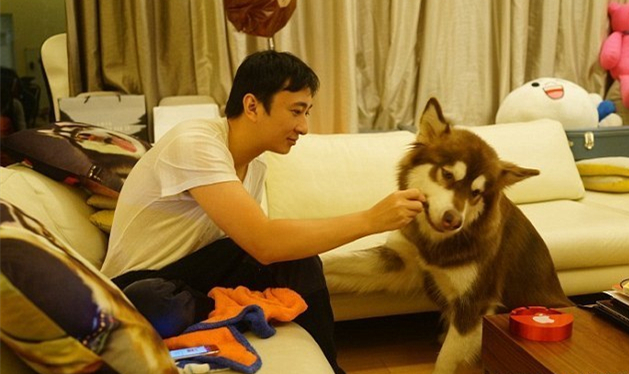
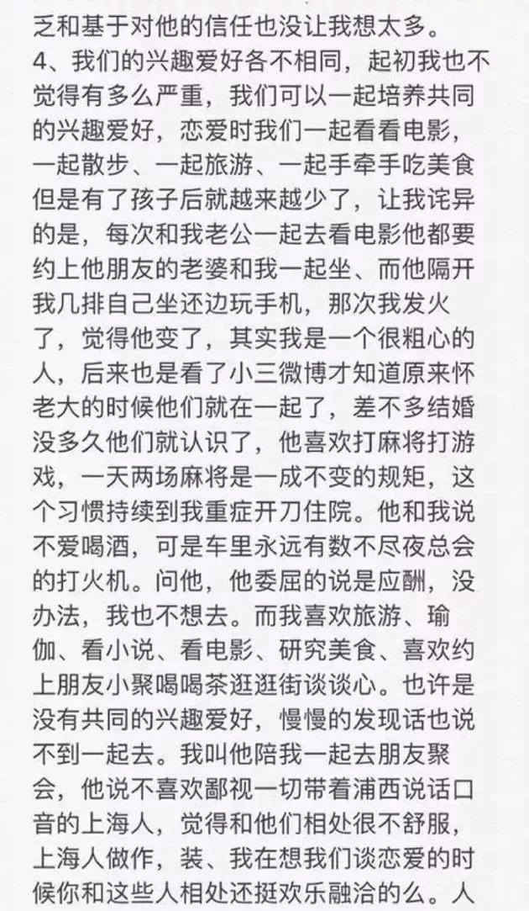
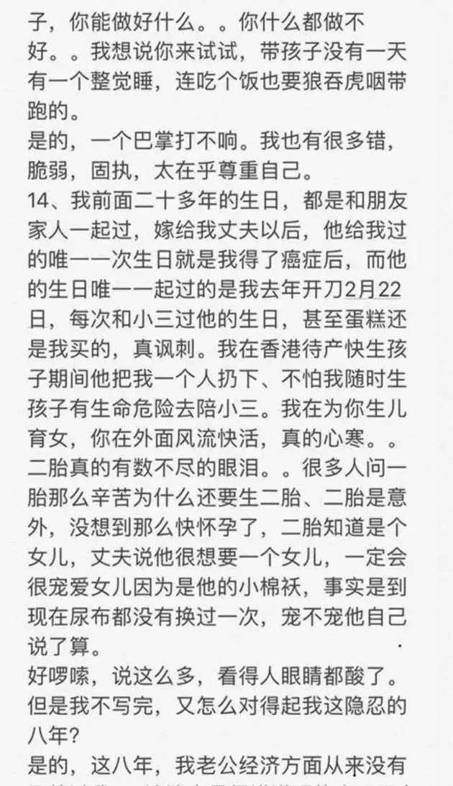

男人的子宫外挂
上一篇： 阿乐们
据陈果自述，八年前，出身农村的陈果决定资助一名初三女孩读书上学，去年，女孩终于顺利读完大学，陈果却得知对方正准备嫁人，丈夫是一个比女孩年长13岁、经济富裕的男性，“男方着急要孩子，她现在想的是尽快怀孕生几个孩子”。
女孩向陈果坦言：“我只是在把握一次改变我命运的机会而已”。
有很多人错误地认为，只要嫁给有钱人就一劳永逸了。在我国古代，未嫁从父，嫁人从夫，丧夫从子是我国重男轻女的悠长文化传统。
这么想的不止有女人，也有男人这么想。但是事实早已经不是如此。
女人更喜欢戴绿帽子
如果是女方出轨了，男人肯定要离婚。
但是男人出轨了，不少女人会为了孩子、为了家庭忍气吞声。
就像奶茶妹妹，刘强东因为嫖娼被抓了，章泽天头上的绿帽子绿的发光。
但是她却说 “只要一家人在一起，便是圆满”
这样就可以自欺欺人地当作一切事情都没发生过。
男人出轨的结局，好像大抵都是如此。

文章出轨，马伊琍说：“婚姻不易，且行且珍惜”。
林丹出轨，谢杏芳第二天就发表申明——我们一家人风雨同舟。
连吴秀波包小三、小四、小五，妻子何震亚都没见说一句怨话。
女人其实不是人
女人是一种性器官和子宫外挂。
女人结婚后应该改成夫姓。这样向大众展示，看，她是某人的性资源和子宫外挂啦！
两个女人牵着手在街上走。大家只会觉得她们关系好，而不会觉得她们是两个独立的互相爱慕的人（女同性恋）.而两个男人牵着手，大家只会觉得他们有不正当的关系。
毕竟器官怎么可能独立地拥有感情呢？你的手会爱上脚趾头吗？太可笑啦。
不仅如此，她还要尽力去生出一个儿子出来，而不是生一个性器官——女儿。
女人只有生出儿子了，她的地位仿佛又变得高贵了起来。
她母凭子贵的成为了”母亲“，而且是个带把的母亲。无论谁说她，她的面上都带有了荣光。
当女人过了30岁，大众窃窃私语，看，一个过期了的器官，不值钱了。
哪像男人，就像白酒一样越老越值钱呢？
过期的子宫外挂
在短则1年，长则十多年的时间里。只要子宫外挂完成了使命。
在卵子青春正好的时间生出了儿子，那么子宫外挂的使命就达成了。
好一些的会让子宫外挂一直无偿地抚养孩子到成年, 剥削到性价值结束再一脚踢开。
除了生孩子不能外包，保姆工作都能外包。
差点的男人直接原形毕露，毕竟孩子已经生了，又不能塞回去。
让她做单亲妈妈，不给抚养费，那又何妨呢？
她的前夫是外务省的高级官僚
日本社会观察
她的前夫是外务省的高级官僚，家庭年收入超过2000万。
她毕业于一流名牌大学，在上市公司有一个综合类职务工作。高级官僚的丈夫要去海外工作，她就辞掉了工作。她28岁生下长女，32岁生下长子。后来，她的母亲患有癌症，她就把精力放在了照顾母亲上，花的钱也都是丈夫的（难道，你指望辞职的家庭主妇赚钱吗）。这导致丈夫的不满，离婚的时候，她40岁。
她带着儿子，而前夫带着女儿。她和儿子回到日本，工资到手26万，每个月7万抚养费，4.2万儿童津贴。40岁以后，正式雇佣的工作就完全找不到了。因为交不起房租，她只好跟妹妹一起住。
长子上了私立高中，学费每个月4万，而前夫因为经济问题，抚养费从7万减少到4万，最后完全不给抚养费了。
她遇上了非法盗刷信用卡的诈骗，背上了债务。长子也因为家庭关系不好，跟她断绝了关系。很多年以后，她跟女儿见了一面，女儿也说，没把你当母亲。她55岁了，完全找不到工作。于是她陷入了老后贫穷。
全职主妇没有五险一金，男人不会给你养老的。
产后抑郁自杀
作者：你也不开心吗
链接：https://www.zhihu.com/question/38964592/answer/2846284979
来源：知乎
著作权归作者所有。商业转载请联系作者获得授权，非商业转载请注明出处。
我是一个因为孩子失去了老婆的男人。这几年午夜梦回无数次希望能回到还没生孩子的时候重新回答我老婆那个问题，但是再也没有了机会。年假在家无事刷到了这个问题，心中一阵感慨。题主，我希望你把我当做你，将我的经历当做你的经历，现在相当于上天再给你一次机会，你再重新考虑要不要劝说并不想生孩子的女友生孩子的事。
我老婆离开我已经四年了，至今未曾再娶。她是我一生挚爱，我们大学相识，毕业后顺理成章结婚，在此之前很少提到与孩子有关的事情。也不是没有提到，恋爱的时候她有发过一些别人产后松垮的肚皮，和肚皮上一条条难看的妊娠纹的照片给我。那时我脑子简单，以为她只是害怕自己生产后也会这样，我回她:宝贝你不会这样的。后来我无数次想到当年她试探性的发那些可怖的图片给我的时候，我很懊悔。医生都不敢保证会不会的事情，我竟然敢对一个本就有生育恐惧的人保证她不会。她没有再多余说很多，可能有些失望，没再讨论这个话题。后来无数次的回想里我终于明白，她那时候给我看那些产后女生的身体，并不是为了让我告诉她她生完孩子后不会那样。她是想问我，如果生孩子会让她变成那样，我还一定要这个孩子吗？如果我那时候能想通就好了。
现在有时候刷抖音也会刷到一些讲怀孕伤害的视频，点开评论区很多女孩艾特自己的男朋友，我见大多数男生也如我当年一般回答:没事你不会像她那样的。那一刻我很想做为过来人去教育他，可我又没有资格，默默地划走。不过我希望女孩子也要明白一点，他那样回复可能真的没有恶意，他只是那时对怀孕分娩的了解太少，只知道不是所有人都会那样。不代表他不爱你。婚后两年左右，父母开始催生，在春节期间用她听不懂的方言告诉我应该要个孩子了，他们现在还能帮我们带。我回家的路上边开着车边假装不经意的问她:宝贝我们都结婚两年了是不是可以准备生个娃娃陪你玩了。我并不重男轻女，甚至更喜欢女儿，一想到可能会有一个长相随她那样可爱的女儿，心里就满是溢出来的幸福感。她沉默了会儿，大概也是明白那次回家父母对我说了些什么。没有正面回答我，而是问我:如果婚前我告诉你我不愿意生孩子，你是不是都不会想和我结婚？我一下子愣在原地。我从未想过我会一生无子。那一刻我脑子里想过很多可能性，如果恋爱期间她告诉我她不会生孩子，也许我会失落，也许我会先稳住她想着等结婚了她想法也许就变了。老家这边都是这么说的，女人生了孩子后就不一样了。我说肯定会啊。她没有再回，把头转向窗面看风景。后来也才半年不到就有了孕吐反应，一测果真怀孕了。我很开心，但她的笑容变少了，满满的都是忧虑，我当时想着孩子出生了就好了。
可我还是太天真了，我第一次知道孕吐就足以要了一个孕妇的命，医院里有很多孕吐这关就过不去只能打掉孩子的。我意识到自己对怀孕掌握的知识太少，那段时间也在恶补怀孕期间的东西。她孕吐得厉害，工作辞了，什么也吃不进，喝口水都要吐出来，我急得团团转，甚至提出过把孩子拿了。
她问我:这个拿了你以后就不要孩子了吗？还是打算让我一次次的怀孕来试探哪一个不让我吐得那么厉害？灵魂质问，我真的不知该怎么回答。后来孕吐期过了，好了一些，她肚子大得很快，三十多周的时候就像顶着个大西瓜，妊娠纹也开始出现了。那时我想起她孕前给我发的那些图，我真的不知该如何为自己的无知和不够慎重的回答挽尊。
怀孕后她整个人都变得坚强了很多，不爱耍小脾气，不那么爱哭了，只是安静地在家里的每一个角落玩手机或是发呆。和上学时那个爱蹦爱跳爱笑的小女孩已经变得完全不同，我想那是有了孩子后身上增添的温柔气质吧。孕晚期一夜要起来七八次，甚至没有我的帮助她都无法起身，便秘非常严重，吃多少通便的东西都没用，我那时已经知道怀孕后子宫的不停增大会把其他的所有器官都挤压得仅剩一点点空间，五脏六腑都被挤在一个小角落，喘气困难呼吸不畅，膀胱存不了什么尿液需要不停地跑去厕所，肠子也被挤得大便都无法正常排出。那时候我就已经有点后悔了。怪我当初从没真正了解过怀孕的不易，我觉得自己混蛋，我不是亲身经历的人，总觉得熬过去就好了。当我看到那张图，想到她现在所有器官都被子宫里那个小家伙挤到移位的时候，我真的很心疼，我想如果我更早的了解了这些知识我一定要一个孩子的想法早就动摇了。
后来终于熬到生产当天，她坚持不要我陪产，产房外焦急的六个多小时我感觉比怀孕的那十个月还漫长。终于等到女儿出世，母女平安，我才觉得心里这九个多月的压力终于放下了。孩子生出来就好了。以后我还有几十年对她好，我再慢慢补偿她。护士将她换回住院的床上，兴许是没力气，她一整天一句话也没说，任由岳父岳母和我父母的关心，她一句话也没有回，眼睛呆呆的望着天花板，我妈妈抱来孩子让她看一眼，她也不愿意侧过头看一眼孩子。第三天出院，三天里她没说过一句话，我不知道她究竟在想什么。回到家岳父岳母在客厅聊天，我在房间陪她。她突然开口说了产后第一句话“突然觉得我不爱你了。”正在削苹果的我手一停，我没想过她竟是这样。她说“生孩子真的好痛，痛的厉害的时候，我觉得和那个痛比起来，我宁愿不爱你。”我一个二十多岁的大男人眼泪突然就止不住，我不停地说着老婆对不起。以后我会对你越来越好的。一个半月后做复查。
盆底肌才恢复了四十多。她当场哭在医院，无法接受自己身体的变化。对了，还有漏尿。医生说治疗和训练有些人能恢复。有些人。。。是啊，我当年就是说她是那种不会长纹，肚子不会松垮，不会漏尿，阴道不会松弛的人。是啊，那么大个孩子从下面出来，怎么可能恢复如初。我本以为生完孩子了一切就都好了。只要产房内传来母子平安，一切都尘埃落定一切都会好起来的。我错了，带走她的是对自己身体变化的无法接受。孩子八九个月时，肚子依旧可以从腰间流出一层厚厚的皮，产后痔疮已经算是最小的了，还有开始逐渐下垂的胸部，她说她不敢想象自己的身体变成了这样。我说没关系不管你变成什么样子我都不会嫌弃你的。“我的身体不是为了给你一个人的，我自己嫌弃。”几天后她就走了。从三十四楼跳了下去。写到这里我已泣不成声。
我总以为孩子出世了一切就都过去了，没想到带走她的是对产后身体的无法接受。是啊，以前的女子都不能读书，身体变成什么样她们都能承受，因为她们早已被洗脑自己存在的唯一目的是给别人传宗接代，她们早已不把自己当一个独立的人格。现在为什么那么多女性不想生孩子？因为她们把自己当人了。她们明白拥有子宫只是拥有生育权，而不是拥有就必须要执行生育本能。我要是早点明白就好了。我要是早点明白，在婚前她就已经害怕生孩子的时候我就会告诉她:宝贝如果你害怕长妊娠纹身材变差我们就不要孩子了，我才不愿意让我的宝贝受这些苦，只是为了要个孩子解闷的话我们去领养那种父母意外身亡的小可怜，也算是做一件好事。毕竟小孩上了大学后陪在我身边的只有你呀！现在女儿五岁多，我很爱她。并且突然意识到我对父母的爱在越来越淡，即使他们为我付出了所有我，我的爱全给了孩子。难以想象有一天我的宝贝女儿也结婚生子后把爱全给了自己的孩子的时候。我真的很爱很爱她，百分百的爱她。但我不幸福。我曾以为结婚后夫妻两一定要有一个孩子才算完整的家庭才能幸福。
后来每每想起我的妻子，每每懊悔恨不得回到当年的时候，我发现我和她在一起的时候最幸福。大学时我们没有孩子，我们攒一学期的零花钱去省外旅个游是幸福，大学后我去接她下班手拉着手聊着天回家是幸福，婚后我们一起在家躺着，她追她的剧，我打我的游戏也是幸福。我和她亲身经历的那些幸福里没有孩子。现在有孩子了，我却感觉不到幸福。因为她不在了。在我无数次的幻想里，我回到了大二在校园门口忽悠新生办卡的时候，她一头短发跳进了我的视野，在我这办了一张校园卡。天气炎热我盛了桶里的一杯烧仙草给她，她说她觉得我人好好。我无数次在幻想中和她活到六七十岁相扶着手在河边散步，那时我们身边没有子女，我们相濡以沫，活的也还算自在。是啊，老了的时候不管年轻时候有无儿女，陪在我身边的都是她。
我反问过自己，为什么觉得婚姻一定要有一个孩子呢？我也不知道，只知道父母是这样告诉我的，这种思想在我脑子里扎根立林了二十几年。她离开的这几年我亲戚父母，甚至岳父都有跟我说过可以再找一个来照顾孩子，以后老了我还是需要有个伴。被父母逼着相亲过一次，我在桌前发了呆，她问我在想什么，我说我在想我的妻子。自然无成，这次相亲后我去医院做了结扎。我不知道她说的不喜欢我了是气话或是真的，我只知道，我不可将就了。每夜躺在宽大的双人床上，我总是会想她，她要是在，冬天的时候要把冰得像石头的脚伸到我的肚皮上，要在从浴室冲出来最冷的时候贴在我的身体上取暖，要在半夜梦到我出轨的时候醒来给我一巴掌……好多好多都再也回不来了。我甚至已经快忘了她长什么样子了。
手机里翻开她的照片，这个爱臭美的家伙喜欢用美颜相机，脸上的皮肤质感看不见，就像我再也无法触摸到的那个真实的她。照片无法让我回忆起真实的活生生的那个人。思绪回到这个问题。题主，如果你是一个无情无义只想找个生育机器的老婆的话，当看了个故事。如果你真的喜欢她，请你把自己代入我。
问问自己，如果以后你的她要经历这些，那么，你还要劝她一定要生个孩子吗？别说不是所有人都是悲剧收尾，如果这样反驳我，跟我当年告诉她她不会长妊娠纹漏尿胸下垂一样。请你做好不好的打算，然后问自己：即使她要承受那些，还是一定要她生那个孩子吗？你需要孩子是因为觉得一个家庭必须有孩子才是幸福还是为了堵住周围人的嘴不想显得另类？如果你这辈子只和她在一起，你会觉得幸福吗？就当上天给你一次机会回到从前，希望你认真思考。毕竟我已经没有那个机会了。
上海第一美女沈丽君
丈夫出轨八年小三逼宫 “上海第一美女”跳楼自杀







她辞职前有一年几十万的收入。婚后丈夫说她没收入，全靠老公养。
她8年生了一儿一女，八年时间都困在屋里柴米油盐。
最后她承受不住，从28楼一跃而下。他只说是她咎由自取。
做一个器官，就要做一个器官的觉悟。
一个性器官，就要忠贞要让男人满足。
一个子宫外挂，就要老老实实生儿子，带孩子。
为什么一个器官，竟然想要做人呢？
嫁与富人家
富人家的钱，跟一个器官有什么关系？
有钱人只要不想分钱，甚至可以用夫妻关系让妻子负债百万。
女子举报前婆婆吃空饷
1 | |
被骗买房”假离婚“变成真离婚，掉包离婚协议，净身出户，孩子男方不支付抚养费，几十万嫁妆被骗走还负债300万！
刘银月作为一个子宫外挂，她的主人有8套房产，9间商铺，4辆汽车。可是这跟她作为一个器官有什么关系？
作者：宝石
链接：https://www.zhihu.com/question/659021054/answer/1899824062072600094
来源：知乎
著作权归作者所有。商业转载请联系作者获得授权，非商业转载请注明出处。
我表姐年轻时贪图男方家的条件好，嫁给了不上进的男人，但是，公公婆婆都有本事，类似于工程师之类的。家里房子车都有，但是都跟表姐无关，生了两个儿子之后，她彻底沦落为家庭妇女。没有一分钱的收入，老公也不上班 就在家啃老，没钱了就给父母要，但是，表姐不行呀，她无法给公公婆婆张嘴要钱，老公又没有责任心，也不给她生活费，因为他的钱都是从爸妈那要的 。老公撑不起来一个家，自己又没有一分钱的收入，表姐看着两个孩子时常感到绝望。
经过无数次的痛苦失眠绝望之后，表姐决定把孩子扔家里，自己出去打工。表姐本身文化程度不高，只能去工厂打工，一个月四千多块钱工资。婆婆说帮忙带孩子，一个月得拿出来两千块给她。表姐虽有不满，还是咬咬牙给了。刚开始由于想孩子，表姐每个月还会回家一次看望孩子，再后来为了省钱，表姐回家次数也越来越少了。而陆陆续续表姐也听到传言说自己的老公在外边找小三了，她心如死灰，唯一放不下的是自己两个儿子。
再后来她实在受不了这样的婚姻生活，决定离婚，想带走一个孩子，然而，零她没有想到的是两个儿子没有一个人愿意跟她，儿子都说爷爷奶奶有钱，都已经给他们买好了房子，跟着妈妈啥都没有。她欲哭无泪，因为所有的财产都是公公婆婆的，她们的小家庭什么也没有，也就是离婚她一无所得，连自己辛苦生下来的孩子也没人愿意跟她。想想十多年的婚姻结局竟然是这样，她想死的心都有了 ，回到娘家，没有人心疼她，所有人都在说她傻，有人说她婆家条件那么好，离婚才是傻子。有人说她白跟人家过了那么些年，啥也没有落，有人说她白给人家生了两个孩子，最后啥也没有，是真够傻的。娘家没法呆了，她又出去打工了，后来实在想念儿子，就回婆家一趟，没想到老公已经另娶了。公公婆婆见她感觉把她轰出去，孩子也不让她见。有一瞬间，她不知道自己为什么活。
总结
作为王思聪家的狗，肯定是出行坐专机，在家住别墅，顿顿大牛排。有人会不想当人，去当狗吗。
我不明白有人好好的人不当，却想做有钱人的挂件，当个器官。
还不是心脏，而是随时可以替换的那种。
所以说女性就这么喜欢当个器官吗？